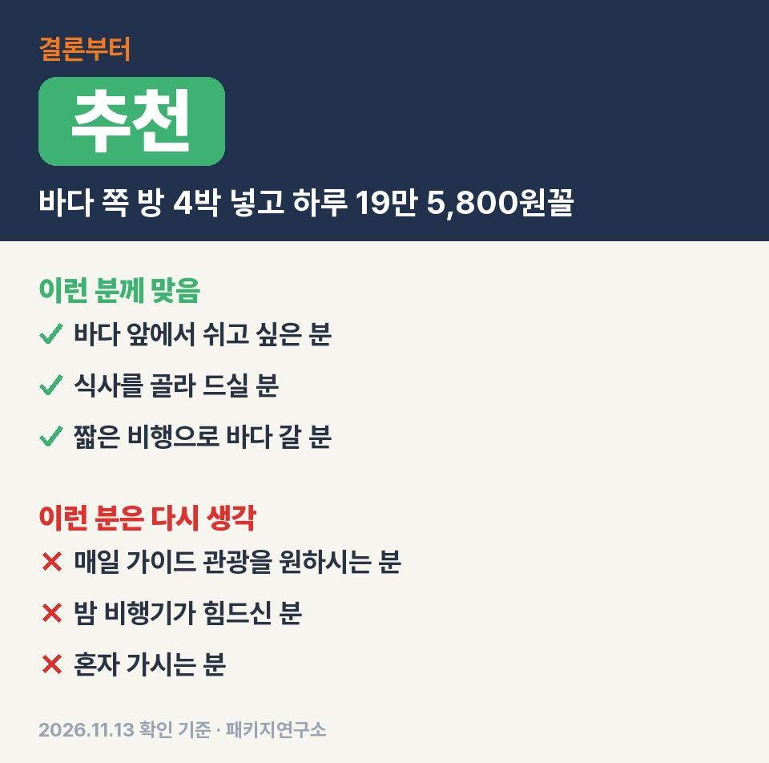
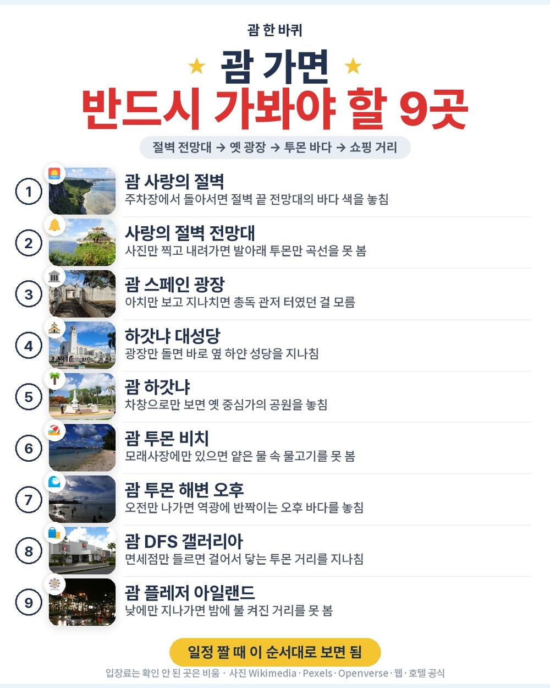
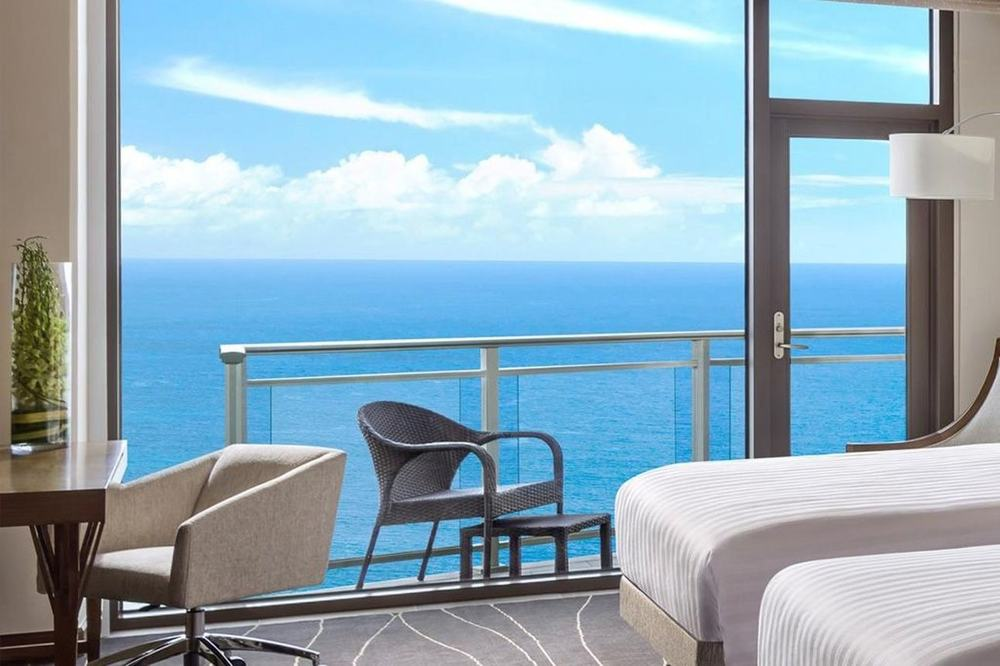
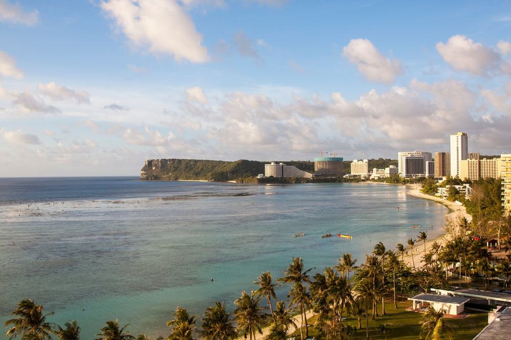
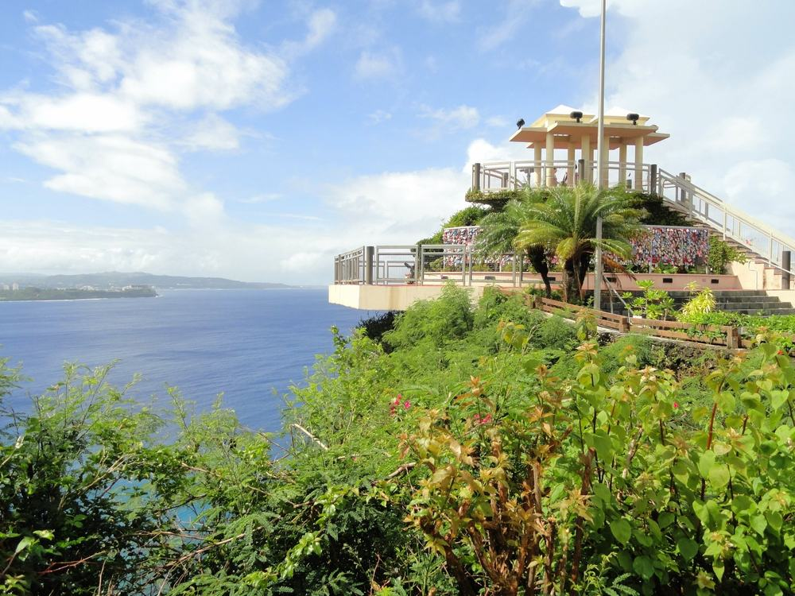

괌 상품 중에 투몬 바다 쪽 객실 네 밤을 한 호텔로 잡고 새벽 2시 비행기 전까지 방을 쓰게 해 둔 구성은 흔치 않음. 대신 점심·저녁이 하나도 안 들어 있어서 식비를 어떻게 보느냐가 갈림길임.
직접 다녀온 후기가 아니라, 일정표와 포함·불포함 원문을 줄마다 맞대어 따져 본 글임.
결론 — 추천. 에어서울 직항, 두짓타니 괌 리조트 디럭스 오션프론트 4박, 조식 4번, 레이트 체크아웃까지 97만 9천원 안에 있음. 다만 매일 가이드 관광을 원하시는 분은 맞지 않음.

오늘 기준 출발일별 요금 보기
https://naver.me/FaeNN8wu

| 항목 | 내용 |
|---|---|
| 가격 | 1인 979,000원 (성인 · 11월 출발 기준) · 2인 1,958,000원 |
| 여행사 | 노랑풍선 |
| 항공 | 에어서울 직항 (RS101·RS102) · 갈 때 약 4시간 20분 / 올 때 약 4시간 30분 · 저녁 출발, 새벽 귀국 |
| 숙소 | 두짓타니 괌 리조트 디럭스 오션프론트 4박 (6~16층 · 세미더블 침대 2개) · 2인 1실 |
| 일정 | 4박 5일 · 자유 일정 위주 · 쇼핑 없음 · 선택관광 1개(괌 아일랜드 관광 성인 10달러) · 공항 픽업 경비 성인 20달러 별도 |
▶ 내 출발일 오늘 기준 요금 확인 (제휴 링크 · 예약 시 수수료를 받으며 가격은 같습니다)
▶ 11월 13일 기준 괌·사이판 패키지 최저 79만 9천원부터 — 출발일별 값 한 화면에: 비교 페이지
| 번호 | 내용 | 한 줄 답 |
|---|---|---|
| 1 | 이 값에 들어 있는 것 | 바다 쪽 방 4박 |
| 2 | 현장에서 더 낼 돈 | 2인 40달러 + 식비 |
| 3 | 일정과 체력 | 걷는 일정 없음 |
| 4 | 자유여행으로 짜면 | 항공값 미확인 |
| 5 | 맞는 분 · 안 맞는 분 | 3 대 3 |
값의 대부분은 바다 쪽 객실 네 밤과 마지막 날 밤까지 이어지는 방값임.

- 항공: 에어서울 인천–괌 직항 왕복, 각종 세금 포함
- 숙소: 두짓타니 괌 리조트 디럭스 오션프론트 4박, 세미더블 침대 2개
- 식사: 조식 4번(아쿠아 뷔페) — 점심·저녁은 전부 개별
- 덤: 마지막 날 밤 레이트 체크아웃, 매일 생수 2병, 호텔 와이파이
- 이동·보험: 공항 왕복 밴, 여행자보험

방이 6층부터 16층 사이 바다 쪽으로만 잡혀 있다는 게 이 값의 핵심임. 단체 쇼핑센터는 한 곳도 안 들르고 선택관광은 2일차 섬 관광 하나뿐이라 안 고르면 그날도 쉬는 날이 됨.
꼭 내는 건 공항 픽업 경비 1인 20달러뿐이고 큰 건 매일 사 먹는 점심·저녁임.
| 항목 | 금액 | 필수/선택 | 비고 |
|---|---|---|---|
| 가이드 왕복 픽업 경비 | 40달러 (약 5만 3천원) | 필수 | 성인 20달러 · 소아 10달러, 개별 이동해도 냄 |
| 괌 아일랜드 관광 | 20달러 (약 2만 7천원) | 선택 | 성인 10달러, 출발 7일 전까지 신청 |
| 점심·저녁 | 드시는 만큼 | 필수 | 상품에 안 들어 있음 |
| 쇼핑 | 0원 | — | 단체 쇼핑 없음 |
| 합계 (2인 필수분) | 40달러 (약 5만 3천원) | 1달러 약 1,337원 · 2026-11-12 환율 · 식비 별도 |
- 2인 총액(픽업 경비까지): 약 201만 1천원, 1인 100만 6천원꼴
- 점심·저녁 여덟 끼 남짓은 따로 잡아 둬야 함
- 매너 팁·개인 비용 별도
정해진 걷기 일정이 없어서 몸이 힘든 건 오가는 밤 비행기 두 번뿐임.
| 일차 | 가는 곳 | 버스 | 걷기 | 점심 · 저녁 |
|---|---|---|---|---|
| DAY 1 | 인천 저녁 출발 → 괌 새벽 1시 도착 → 밴으로 호텔 | 약 20분 | 적음 | — · — |
| DAY 2 | 조식 → 괌 아일랜드 관광(선택) 사랑의 절벽·스페인 광장·아가나 | 약 30분 | 적음 | 개별 · 개별 |
| DAY 3 | 조식 → 투몬 거리 자유 시간(DFS 갤러리아·플레저 아일랜드·투몬 샌즈 플라자) | — | 보통 | 개별 · 개별 |
| DAY 4 | 조식 → 투몬 비치 자유 시간 → 레이트 체크아웃 | — | 적음 | 개별 · 개별 |
| DAY 5 | 괌 새벽 2시 출발 → 인천 아침 5시 50분 도착 | 약 20분 | 적음 | — · — |
- 버스: 공항 왕복과 섬 관광 말고는 차 탈 일이 없음
- 걷기: 호텔에서 쇼핑몰·식당가가 걸어서 닿는 거리라 걷는 양은 본인이 정함
- 힘든 날: 1일차와 5일차, 둘 다 새벽 시간 비행이라 잠이 끊김

첫날은 새벽 1시에 내려서 호텔 들어가면 바로 자는 일정임. 마지막 날은 방을 밤까지 쓰니까 샤워하고 쉬다가 공항 가면 돼서, 새벽 비행기 치고는 덜 지침.
같은 목적지 다른 여행사 패키지, 쇼핑·선택관광·가이드 경비까지 비교
https://pkg-lab.com/go/?q=%EA%B4%8C%C2%B7%EC%82%AC%EC%9D%B4%ED%8C%90+11%EC%9B%94&utm_source=ghpages&utm_medium=post&utm_campaign=daily
항공값을 오늘 조회하지 못해 합계는 비웠고 같은 방을 따로 잡는 값이 제일 큰 비교 거리임.
| 항목 | 금액 | 근거 |
|---|---|---|
| 인천–괌 왕복 항공 | 확인 못 함 | 2026-11-13 마이리얼트립 조회 실패 — 숫자를 지어내지 않음 |
| 두짓타니 오션프론트 4박 | 확인 못 함 | 같은 날짜 객실값을 오늘 조회하지 않음 |
| 식사 | 둘 다 개별 | 패키지도 점심·저녁 불포함, 조식만 포함 |
| 공항 이동 | 택시·렌터카 | 패키지는 왕복 밴(경비 성인 20달러) |
| 여행자보험 | 따로 가입 | 패키지는 포함 |
| 가이드 | — | 자유여행은 없음(패키지도 공항 픽업 때만) |
| 합계 | 확인 못 함 |
- 패키지: 항공·오션프론트 4박·조식·레이트 체크아웃·공항 밴·보험까지 1인 97만 9천원
- 자유여행: 항공과 호텔을 따로 잡고 마지막 날 밤 방은 따로 요청하거나 하루를 더 잡는 식
새벽 1시 도착이면 공항에서 호텔까지 가는 길부터 직접 챙겨야 함. 그 부분과 마지막 날 밤 방값을 묶어 둔 값으로 보면 비교가 쉬움.
쉬러 가는 분께는 잘 맞고 매일 안내받는 관광을 원하면 안 맞음.
| 맞는 분 | 안 맞는 분 |
|---|---|
| 단체 관광 없이 바다 앞에서 쉬고 싶은 분 | 매일 가이드 관광을 원하시는 분 |
| 식사를 원하는 곳에서 고를 분 | 밤 비행기가 힘드신 분 |
| 4시간대 비행으로 따뜻한 바다에 갈 분 | 혼자 가시는 분(싱글룸 사용료 1,000,000원) |
이 상품 게시판에 남은 후기는 아직 한 건인데, 호텔 위치가 편하고 객실에서 보이는 바다가 좋았다는 쪽이었음. 후기가 적어서 이걸로 단정하긴 이르고 방 위치·뷰 얘기라는 정도로만 보면 됨.
Q. 괌 패키지 가격에 식사도 들어 있나요?
A. 조식 4번만 들어 있음. 호텔 아쿠아 뷔페이고 점심·저녁은 전부 개별임.
Q. 괌 패키지 노쇼핑인가요?
A. 이 상품은 단체 쇼핑 일정이 없음. 3일차 투몬 쇼핑가는 자유 시간이라 가고 싶을 때만 가면 됨.
Q. 괌 가려면 비자가 필요한가요?
A. 무비자지만 전자여행허가(G-CNMI ETA, 무료) 또는 ESTA가 꼭 있어야 하고 출발 5~7일 전 승인을 권장함. 전자 세관신고는 도착 72시간 전부터 쓸 수 있음.
부모님 모시고 가서 관광보다 바다 앞 방에서 쉬게 해 드리고 싶을 때 맞는 상품임. 식비를 따로 잡을 생각이면 97만 9천원에 이 방과 레이트 체크아웃까지 묶인 구성은 고를 만함.
출발일에 따라 값이 달라서 가시려는 날짜 요금부터 확인하시면 됨.
오늘 기준 출발일별 요금 보기
https://naver.me/FaeNN8wu
이 글에는 네이버 제휴 링크가 포함되어 있으며, 링크를 통해 예약하시면 일정 수수료를 받습니다. 가격은 동일합니다. 가격과 구성은 2026년 11월 13일 확인 기준이며 출발일에 따라 달라질 수 있습니다.
▶ 이 상품, 영상으로 보기 (유튜브)
▶ 괌·사이판 패키지 오늘 값 나란히 비교
▶ 같은 목적지 다른 여행사 패키지, 쇼핑·선택관광·가이드 경비까지 비교: pkg-lab.com
.jpg){kind=link}
.jpg){kind=link}
_in_Guam_in_June_2017.jpg){kind=link}


.jpg){kind=link}